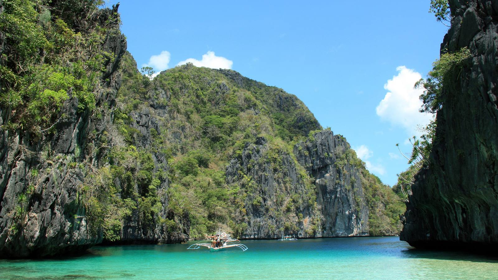
Philippines, February 2027. Ten days. West Palawan, dry season. One water cottage, a kayak, and the lagoon two minutes from the deck.
Feature — Big Lagoon · Location — Miniloc Island, El Nido, Palawan
This is written for the two of you, sitting together with a laptop or a phone, building one itinerary — not backpacking for a month. Mellyba-style planning books after long trips are 13 stops and five sample lengths. Yours is different: we already know the shape.
Tap Save on any island, stay, or activity you want to keep. The sticky Shortlist button holds the count. Open it to copy a plain-text list into Messages, or print just the shortlist as a one-page PDF.
Tap a heart when you have a first reaction. It stays on this device.
Pinch, scroll, or drag. Default view is Bacuit Bay so Miniloc and the lagoons are readable. Philippines zooms out to the archipelago. Teal is islands, gold is what you do, terracotta is where you sleep.
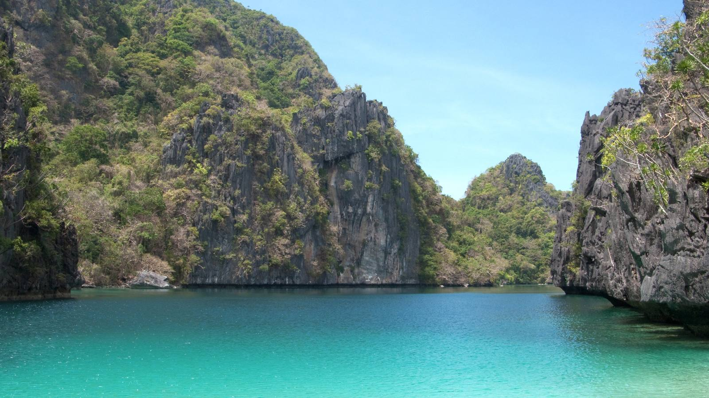
Tommy flies SYD–MNL about 8.5 hours, then you do not connect through NAIA for El Nido. From 29 March 2026 AirSwift El Nido (ENI) is via Clark (CRK). Build the itinerary around that: international into Manila or Clark, domestic out of Clark, boat from Lio into Bacuit Bay.
Skip combining Cebu + Palawan in ten days. Skip Siargao in February (Type II wet). Skip Oslob. The water cottage is the point.
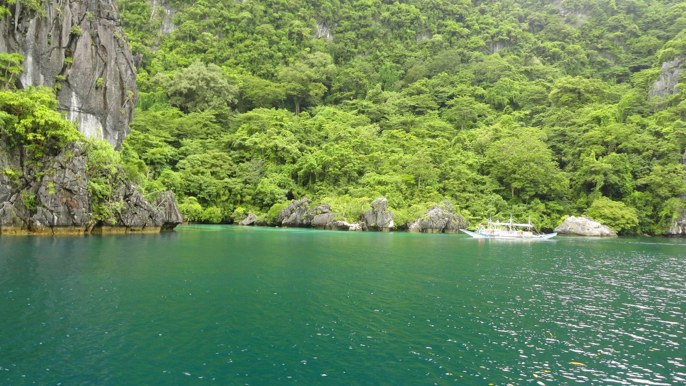
Industry and independent-blog consensus (the same warning you will hear from long-stay planners): March–May is the sweet window — still dry on the west, slightly fewer Christmas leftovers. Early January is the one to avoid for wind and cancelled tours. February is high season. Palawan is crowded. The water cottages and the good El Nido rooms book out.
We still pick February. You already locked it against Christmas. West Palawan is in its dry season. Miniloc in February is exactly the picture you wanted. Book the cottage 4–6 months ahead — that is now, not later.
What February costs you: more people at Big Lagoon after 9am, higher nightly rates, and the 2026 lagoon rules (motorised boats cannot enter Big or Small Lagoon; kayak or paddle only; daily caps). What February gives you: the house-reef water, Cadlao in the afternoon light, and seven mornings that start on stilts.
Budget A is yours. Budget B is the shape of a public sample 14-day backpacker/mid island-hop for two (~€2,350) — useful so Dasha can see what that number is actually describing. It is not overwater. It is not this trip.
| Line | Couple, AUD |
|---|---|
| Miniloc water cottage, per night for two, all-inclusive meals (Feb peak band) | ~850–1,050 |
| 7 nights | ~6,000–7,400 |
| Sydney–Manila return, two people | ~1,600–2,400 |
| Domestic to El Nido, two people | ~400–800 |
| Eco fees, drinks, buffer | ~300–600 |
| All-in for two | ~9,000–12,000 |
These bands are locked from our August 2026 research. Do not treat a random listing screenshot as more true than this.
| Line | Couple, AUD (approx.) |
|---|---|
| €2,350 for two at a mid-2026 rate ~1.65 | ~3,900 |
| What it buys | Guesthouses, ferries, shared tours, local meals — Coron / El Nido town / maybe one more stop. Not a water cottage. Not all-inclusive. Not February peak overwater. |
Sri Lanka sits once, as the cheaper sibling you already have: Ella 5 + south 4, couple ~AUD 5,000–7,500. Same length of holiday, jungle and tea instead of stilts. If the cottage quote comes in above 1,050 a night, that is the comparison — not a lesser Philippines.
These are the well-known chapter islands, not anyone’s unpublished beaches. Verdicts are for your February 10 days.
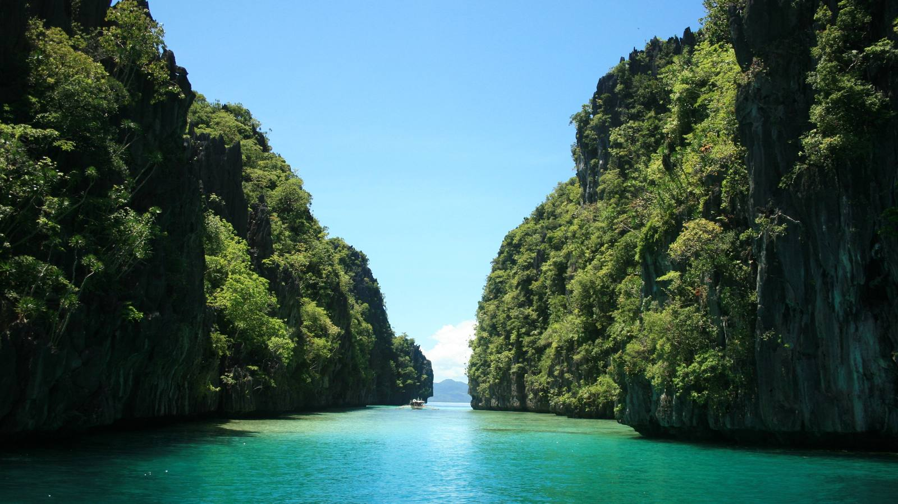
Big Lagoon sits against Miniloc. From a water cottage you can be in a kayak before the day-tour boats stack up. 2026 rules: no motorised boats inside Big or Small Lagoon; paddle in; respect the daily cap. Small Lagoon is the slot you squeeze through. Cadlao is the mountain across the bay for a quieter paddle.
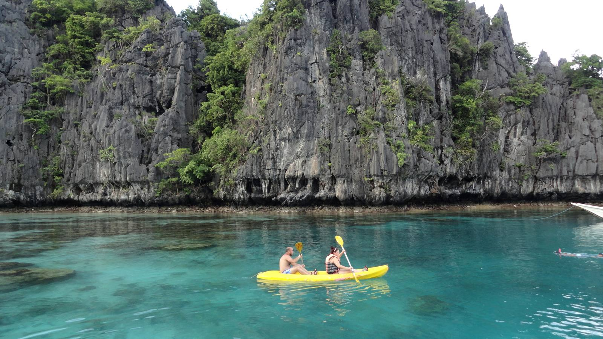
Town operators sell lettered island-hop days. You do not need all of them. If you leave Miniloc at all: A is the lagoon day (Big, Small, Secret Lagoon, Shimizu). C is hidden beaches and Helicopter Island energy. B and D are extra caves and sandbars — skip unless you are restless. From Miniloc, a private kayak at dawn replaces half of Tour A.
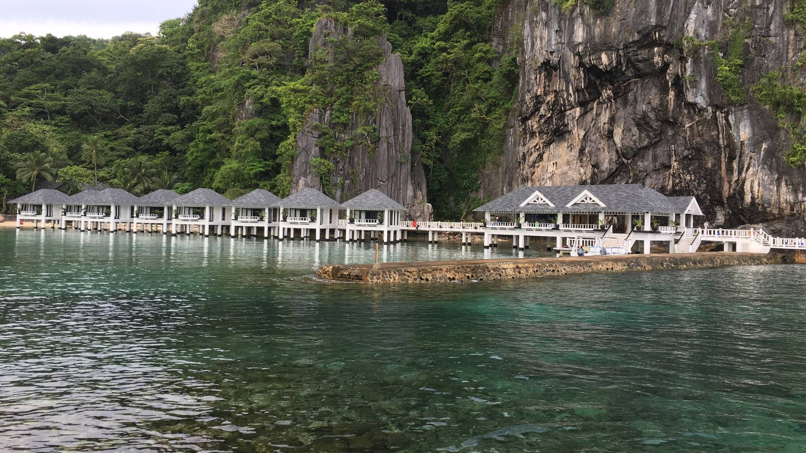
Miniloc water cottages are the stay to book: all-inclusive meals, house reef, Big Lagoon a two-minute kayak. The close-up cottage photo we have is Lagen — same Bacuit Bay stilts, labelled honestly. Lagen is the sibling resort: also over water, slightly further from Big Lagoon. A town villa in El Nido is cheaper and puts you in tricycles and 7am tour boats. You did not ask for that picture.
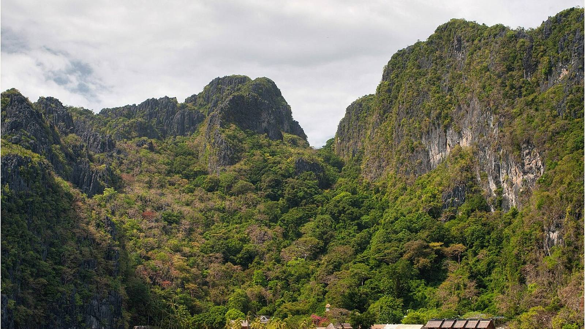
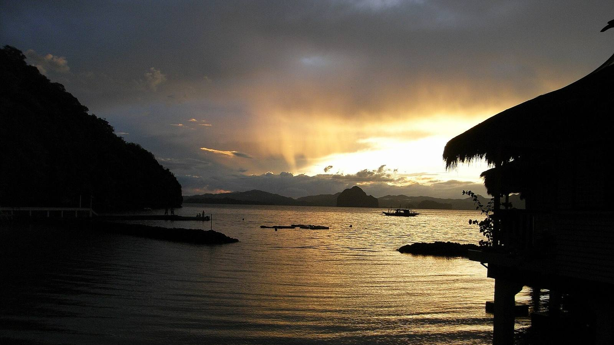
Lio is the airport for El Nido, not a town beach day. AirSwift via Clark from 29 Mar 2026. Eco fee is paid on arrival in the municipality — small, cash-friendly, keep the receipt for island days. Bring some pesos; island ATMs are not a plan.
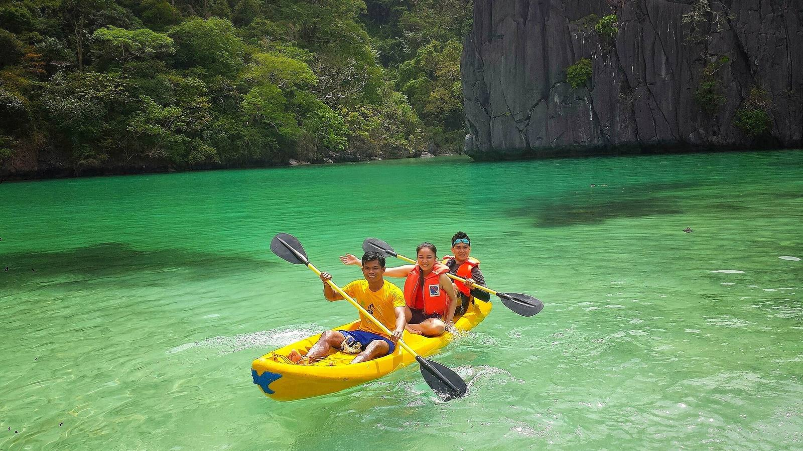
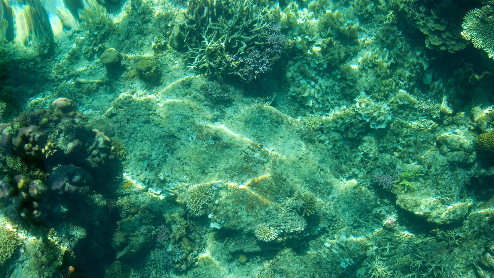
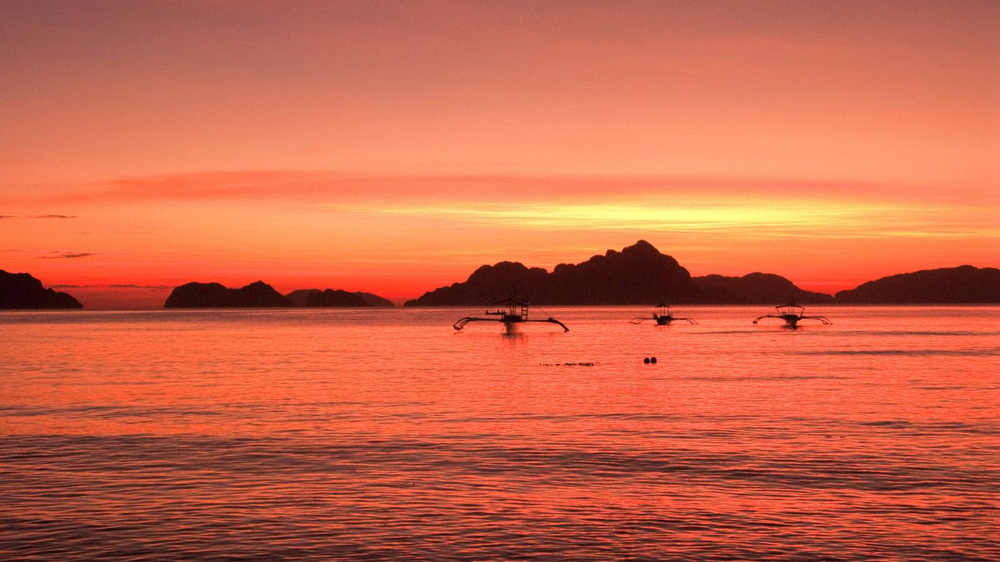
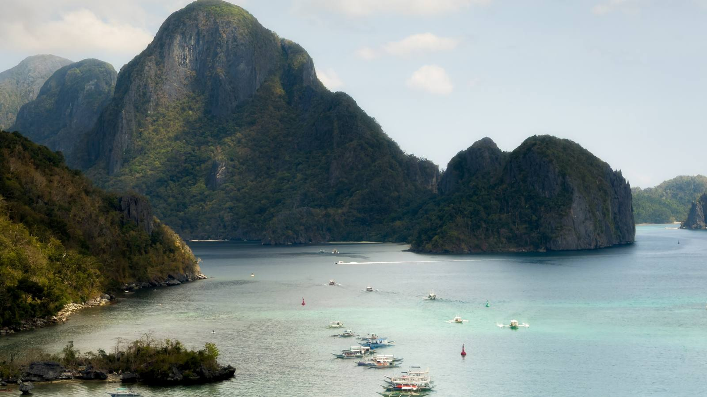
Coron is a ferry (or a tiny hop) north: wrecks, Kayangan-type lakes, a different limestone. Worth 3 nights if you ever stretch to two weeks — not instead of Miniloc.
Port Barton is the calmer Palawan town: slower boats, fewer lagoons, good if El Nido town ever felt loud. It is not the overwater picture.
Balabac is a 3-day expedition from the far south of Palawan — permits, boats, camping energy. It is not a 10-day add-on. Put it on Later and leave it there.
Manila (MNL / NAIA) is the international door from Sydney (~8.5h). It is a bad domestic connector for El Nido once AirSwift has moved to Clark.
Clark (CRK) is the El Nido domestic door from 29 Mar 2026. Plan the transfer between NAIA and Clark as its own move (coach or car, hours not minutes) unless you fly international into Clark.
Cebu (CEB) is the Visayas hub: Moalboal, Bohol, Siquijor, Camiguin chains. Beautiful, and a different holiday. Ten days with an overwater Palawan stay cannot also “quickly see Cebu.” That is how people spend two days in airports.
Island hops eat weather buffers. February is dry in the west, still not a reason to stack Palawan + Cebu + Siargao.
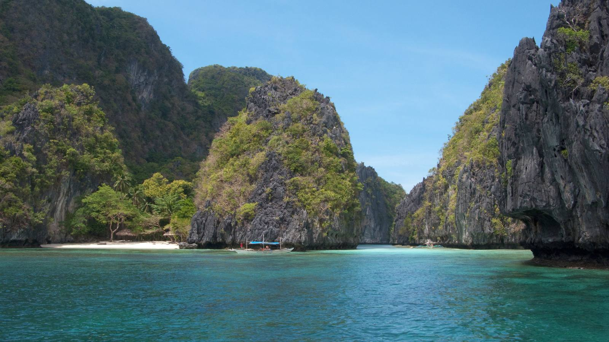
Passport (AU): 30 days visa-free. Free eTravel QR at etravel.gov.ph — do it before you fly; screenshot it.
Cash: Pesos on the islands. ATMs in El Nido town exist and fail. Get cash in Manila/Clark. Cards at the resort for the room; cash for eco fee, tips, island snacks.
SIM: Airport eSIM or a Globe/Smart desk. Coverage on Miniloc is fine for messages, not a work week.
Packing: Reef-safe sunscreen, long sleeve UV, dry bag for the kayak, one nicer shirt for dinner, cash pouch, off-the-shelf motion tabs if Tommy hates bangka chop. You do not need a full backpacker kit.
Safety: Smartraveller currently advises a high degree of caution for the Philippines overall. Palawan tourist areas (El Nido, Coron, Puerto Princesa corridor) are where Australians actually go. Mindanao is not this trip. Standard street sense in Manila. Swim inside marked house-reef and lagoon rules.
This is an original planning book, not Mellyba’s paid ebook. Seasonal warnings (March–May preferred; early January wind; February peak and Palawan booking-out) are industry and independent-blog consensus plus our own research. Island names are the public 13. Photos are real Wikimedia stills of named places — Lagen cottages are captioned as Lagen. Prices for the water cottage and the all-in band are the locked AUD figures from 31 Aug 2026. We did not invent restaurants. We did not scrape a paid PDF.
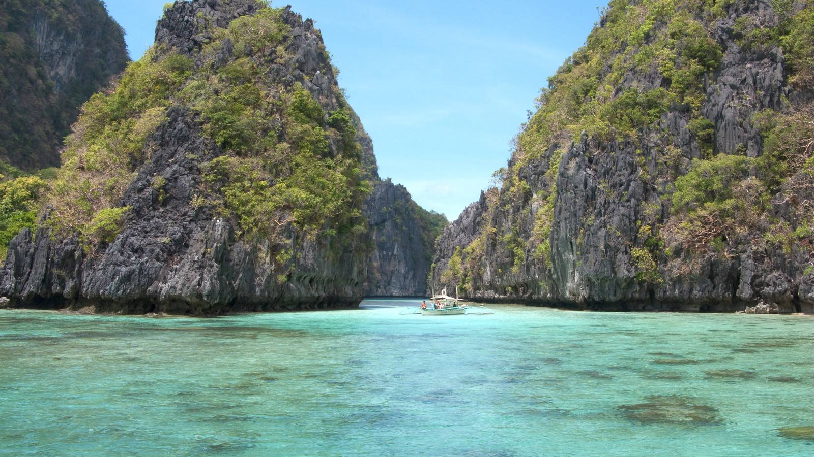
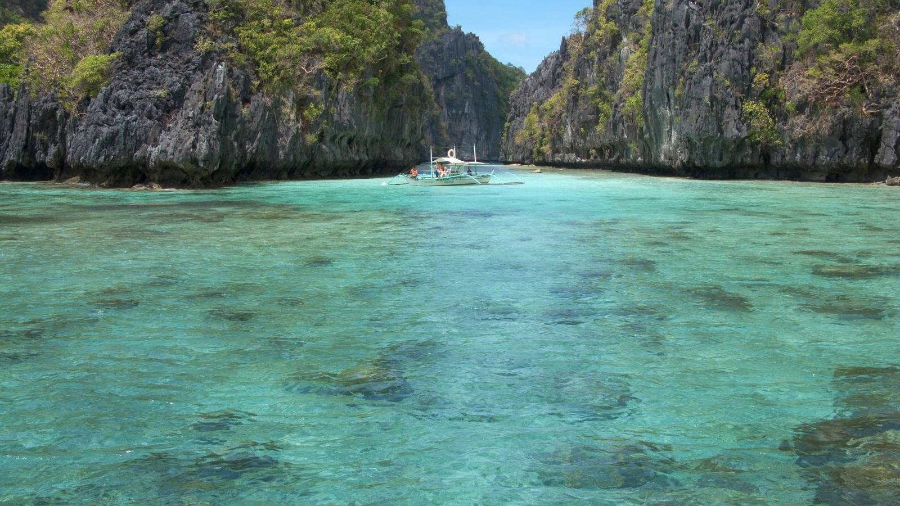
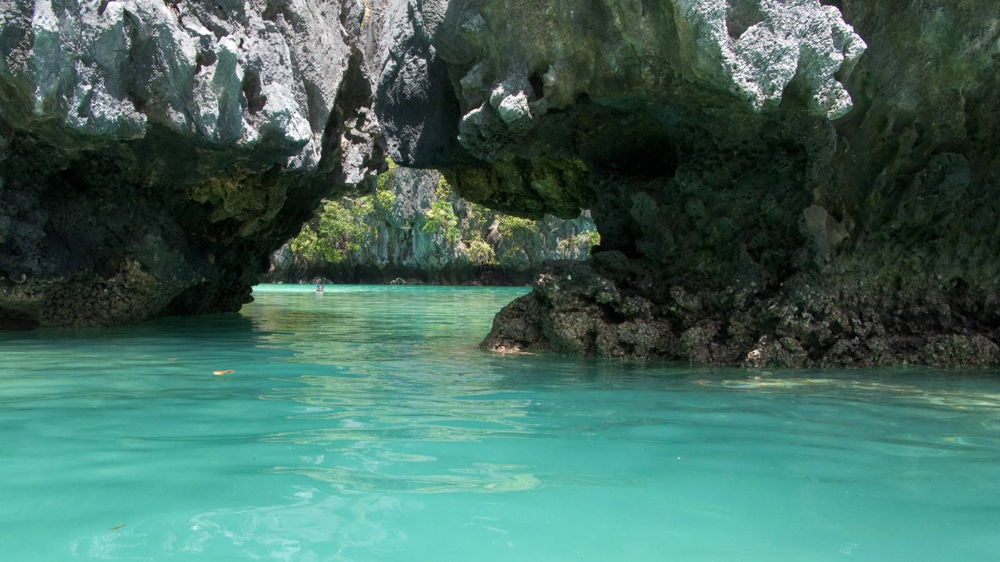
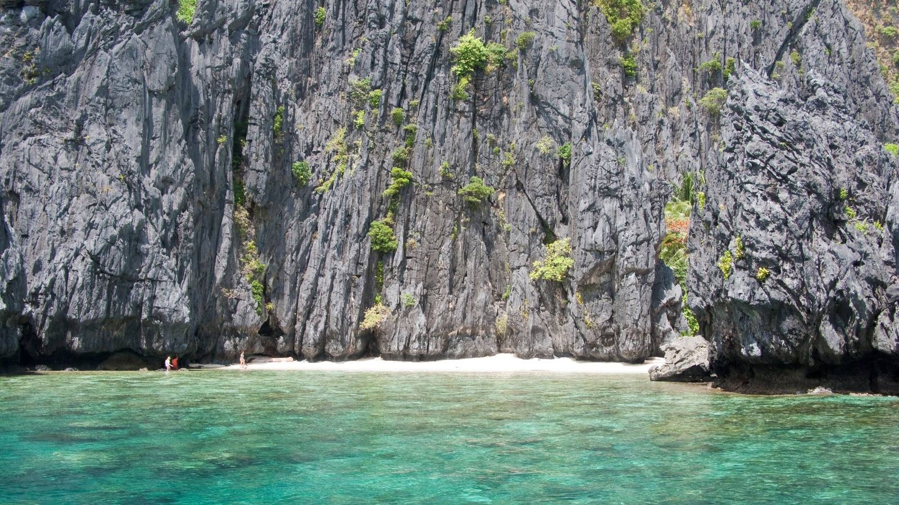